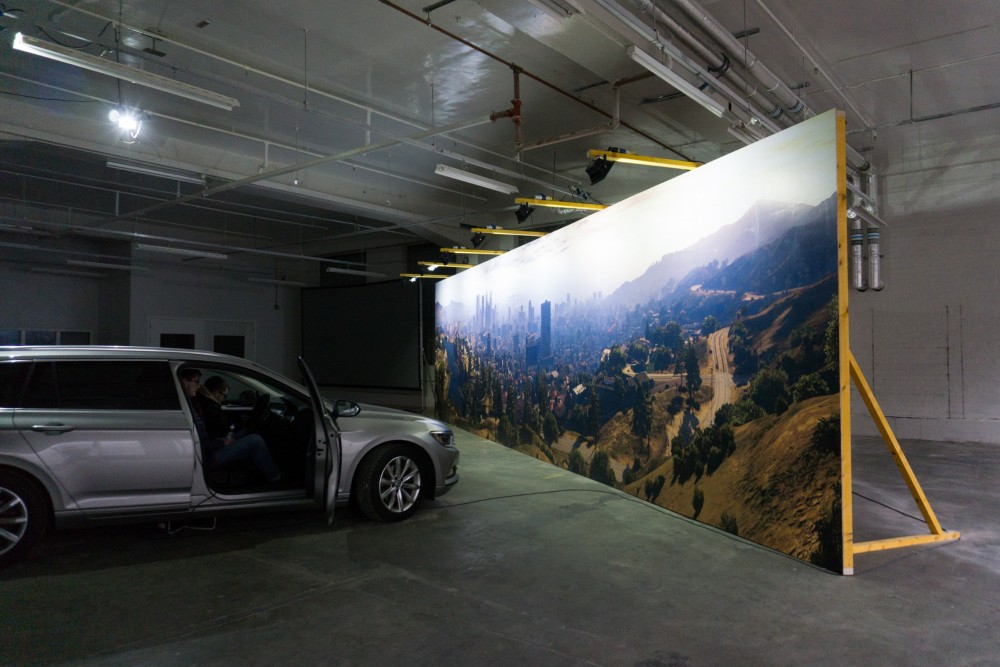
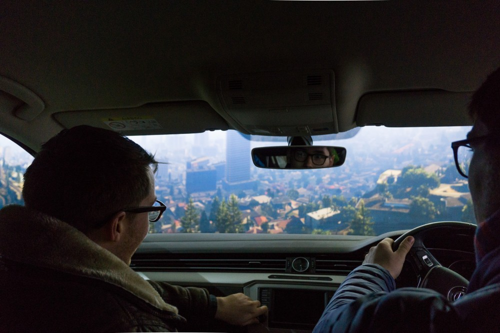

7 Hyperrealism
//intro to the artistic current of photorealism and hyperrealism in painting and drawing, connected to the idea of photorealism and simulation in games, relation between game and cinema and the attempt to simulate life itself, not just photographic image. relationship between the game and the physical world, the way virtual spaces influence and shape society (training self driving cars in GTA V, CGI shaping architecture of buildings and object…), the blurrying of the lines between virtual and physical…
8k by Aram Bartholl
 Aram Bartholl, 8k, installation view
 Aram Bartholl, 8k, installation view
Tutorial
Using Props to Light a Scene
In addition to NPCs, we can also spawn and control objects. There are more than 15000 objects in the GTA V database that can be accessed and search through this index. From yachts to paintings, from flower vases to rocks, they vary in scale and properties and constitute all the objects that are present in the game world.
Objects are referred as Prop variables in the code, and similarly to Ped and Vehicle they are a GTA Entity data type.
To create a new prop we use the World.CreateProp function. This needs the following parameters: a string with the prop file name, the relative of absolute 3D coordinates of where the prop should be created, the 3D rotation value (optional, if not specified the prop will have default rotation values), a true/false boolean to set the object as dynamic or static, a true/false boolean for snapping the object on the ground or spawning it at an arbitrary position.
GTA.World.CreateProp(model : Model , position: Vector3, rotation: Vector3, dynamic : bool, onGround : bool)
Let’s create a Prop variable called MyProp and let’s make an alarm siren appearing 3 meters in front of the player, with default rotation, dynamic and snapping to its original position:
Prop MyProp = World.CreateProp("xm_prop_x17_sub_alarm_lamp", Game.Player.Character.GetOffsetInWorldCoords(new Vector3(0, 3, -3)), true, false);By default the siren is placed on top of a ceiling, so it will appear above the player.

To delete a prop we can call the Prop variable we created and use the Delete() function:
We can also remove Collisions by using the IsCollisionEnabledboolean to false:
There are several hundreds different light objects within the game’s database. We can use these object to manipulate the light for our shots, just like a photographer would do in the studio.
Try spawning “prop_spot_clamp_02” to get harsh spot lights
Prop MyProp = World.CreateProp("prop_spot_clamp_02", Game.Player.Character.GetOffsetInWorldCoords(new Vector3(0, 3, 3)), (new Vector3(62, 5, 0)), true, false);
//To do: introduction to lighting in photography //Hard, soft, specular and diffuse light //3 Point Lighting Technique
Below is a list of objects casting lights which can be used to light up the scene in different ways.
Lighting props
//STUDIO WHITE TRIPOD LIGHT (COLD)
Prop MyProp = World.CreateProp("ch_prop_tunnel_tripod_lampa", Game.Player.Character.GetOffsetInWorldCoords(new Vector3(0, 3, 0)), true, false); //set to true to place on ground or adjust the Z position (by default is about 1 m from the ground)//STUDIO WHITE TRIPOD LIGHT (WARMER)
Prop MyProp = World.CreateProp("xm_prop_base_tripod_lampb", Game.Player.Character.GetOffsetInWorldCoords(new Vector3(0, 3, 0)), true, true); //set to true to place on ground or adjust the Z position (by default is about 1 m from the ground)//STUDIO WHITE TRIPOD LIGHT (STRONGER)
Prop MyProp = World.CreateProp("xm_prop_base_tower_lampa", Game.Player.Character.GetOffsetInWorldCoords(new Vector3(0, 3, 0)), true, true); //rotation is fixed, set to true to place on ground or adjust the Z position (by default is about 1 m from the ground)//LIGHT BOX (WARM)
Prop MyProp = World.CreateProp("xm_prop_base_wall_lampa", Game.Player.Character.GetOffsetInWorldCoords(new Vector3(0, 3, 0)), GameplayCamera.Rotation, true, false); //use custom rotation to direct light, set to true to place on ground or adjust the Z position (by default is about 1 m from the ground)//LIGHT BOX (COLD)
Prop MyProp = World.CreateProp("xm_prop_base_wall_lampb", Game.Player.Character.GetOffsetInWorldCoords(new Vector3(0, 3, 1)), true, false); //fixed rotationl, set to true to place on ground or adjust the Z position (by default is about 1 m from the ground)//WHITE NEON LIGHT (no tripod)
Prop MyProp = World.CreateProp("xm_prop_base_tripod_lampc", Game.Player.Character.GetOffsetInWorldCoords(new Vector3(0, 3, 0)), true, true); //the neon light is vertical, set to true to place on ground or adjust the Z position (by default is about 1 m from the ground)//NEON LIGHT GROUP OF 3 (vertical)
Prop MyProp = World.CreateProp("xm_prop_lab_tube_lampa_group3", Game.Player.Character.GetOffsetInWorldCoords(new Vector3(0, 3, 0)), true, true); //NEON LIGHT GROUP OF 6 (vertical, different colours: modify ending with _g, _p, _r, _y for green, pink, red, yellow)
Prop MyProp = World.CreateProp("xm_prop_lab_tube_lampa_group6_g", Game.Player.Character.GetOffsetInWorldCoords(new Vector3(0, 3, 0)), false, false); //ARENA LIGHTS
Prop MyProp = World.CreateProp("xs_propintarena_lamps_01a", Game.Player.Character.GetOffsetInWorldCoords(new Vector3(0, 3, 0)), GameplayCamera.Rotation, false, false);//STROBO LIGHTS
Prop MyProp = World.CreateProp("ba_prop_battle_lights_fx_riga", Game.Player.Character.GetOffsetInWorldCoords(new Vector3(0, 3, 2)), GameplayCamera.Rotation, false, false);//4 FLOATING SPOTS LIGHTBOX (modify ending to get different color hues: _lr1 to _lr9)
Prop MyProp = World.CreateProp("ba_prop_battle_lights_int_03_lr1", Game.Player.Character.GetOffsetInWorldCoords(new Vector3(0, 3, 2)), GameplayCamera.Rotation, false, false);//WHITE WASH CEILING LAMP
Prop MyProp = World.CreateProp("prop_chall_lamp_02", Game.Player.Character.GetOffsetInWorldCoords(new Vector3(0, 3, 0)), true, false);//WHITE SPOT LAMP
Prop MyProp = World.CreateProp("prop_spot_clamp_02", Game.Player.Character.GetOffsetInWorldCoords(new Vector3(0, 3, 3)), true, false); //adjust the Z position (by default is on the floor)//MULTIPLE WHITE LIGHTS SETUP
Prop MyProp = World.CreateProp("v_ilev_carmodlamps", Game.Player.Character.GetOffsetInWorldCoords(new Vector3(0, 3, 0)), true, false); //adjust the Z position (by default is on the floor)//SOFT WHITE WASH
Prop MyProp = World.CreateProp("v_ilev_fh_lampa_on", Game.Player.Character.GetOffsetInWorldCoords(new Vector3(0, 3, 0)), true, false); //adjust the Z position (by default is at player's face height)//CEILING WHITE NEON (HARSH)
Prop MyProp = World.CreateProp("xm_base_cia_lamp_ceiling_01", Game.Player.Character.GetOffsetInWorldCoords(new Vector3(0, 3, 3)), true, false); //adjust the Z position (by default is about 1 m from the ground)//CEILING WHITE SPOT (HARSH)
Prop MyProp = World.CreateProp("xm_prop_base_silo_lamp_01a", Game.Player.Character.GetOffsetInWorldCoords(new Vector3(0, 3, 0)), true, false); //adjust the Z position (by default is about 1 m from the ground)//FLOOR SOFT WHITE WASH TILE
Prop MyProp = World.CreateProp("xm_base_cia_lamp_floor_01a", Game.Player.Character.GetOffsetInWorldCoords(new Vector3(0, 3, 0)), true, true); //set to true to fix on the ground//RED SIREN CEILING LIGHT (SIREN ON = xm_prop_x17_sub_al_lamp_on SIREN OFF = xm_prop_x17_sub_al_lamp_off SIREN OFF CASTING LIGHT = xm_prop_x17_sub_alarm_lamp)
Prop MyProp = World.CreateProp("xm_prop_x17_sub_alarm_lamp", Game.Player.Character.GetOffsetInWorldCoords(new Vector3(0, 3, -5)), true, false); //set false and adjust value to position in the Z axis (by default is positioned on the ceiling)Setting the Time of the Day
We can control the time and the light for our shots to the second in GTA V. We can specify the exact time of the day with the native function SET_CLOCK_TIME, followed by hour, minute and second. Note that the sun sets at 5:30 a.m. and goes down at 8 p.m.
Set the imte of the day to 15:45:
Controlling the Weather
We can choose among the following weather options using the native function SET_WEATHER_TYPE_NOW_PERSIST:
“CLEAR” “EXTRASUNNY” “CLOUDS” “OVERCAST” “RAIN” “CLEARING” “THUNDER” “SMOG” “FOGGY” “XMAS” “SNOWLIGHT” “BLIZZARD”
Set the weather to blizzard:
Scripting Cinematic Fade Out / In
Script Hook has native functions to create a fead to/from black. The function hash are DO_SCREEN_FADE_OUT and DO_SCREEN_FADE_IN and they are followed by the number of milliseconds to go from full black to showing the scene and viceversa.
Let’s create a fade to black over 3 seconds when we press the letter key ‘O’:
And a fade over 3 seconds when we press the letter key ‘I’:
We could also create an automated check in our onTick loop, which keeps seeing if the screen has been faded to black. We can use the native function IS_SCREEN_FADED_OUT which is a boolean data type. This means it will return either true or false. If it returns true, it means the screen has been faded out.
Let’s add an “if” statement in our onTick loop to chek if the screen has been faded to black, and if so we teleport somewhere else and we call a fade in over 3 second:
if (Function.Call<bool>(Hash.IS_SCREEN_FADED_OUT))
{
Function.Call(Hash.SET_ENTITY_COORDS, Game.Player.Character, -1374.881f, -1398.835f, 6.141f, 0, 0, 1);
Wait(500);
GTA.Native.Function.Call(Hash.DO_SCREEN_FADE_IN, 3000);
}Now if you try to hit the ‘O’ key, the screen will fade out, and then it will automatically fade in again.
Natural Vision Evolved Mod
Natural Vision Evolved (NVE) is a graphic mod develped by Jamal Rashid, aka Razed. This mod enhances GTA V’s lighting, weather effects, ambient colours, world textures, building models, pushing the photo-realism and cinematic looks. While the mod contains settings for different hardware settings, it’s recommended to have a relatively powerful PC with a good graphic card. Here you can find minimum and recommended requirements for Natural Vision Evolved mod.
Installation and setup:
Go to razedmods.com/gta-v and download Natural Vision Evolved (6.2 Gb).
Go to openiv.com/ and download Open IV, Open ‘ovisetup’ and install Open IV on your computer.
Select GTA V Windows. Choose Grand Theft Auto V folder
C:\Program Files (x86)\Steam\steamapps\common\Grand Theft Auto VOnce Open IV is open, go to your file window select the
Toolsmenu on top of the window, and selectASI Manager. InASI Managerinstall all options: ASI Loader, OpenIV.ASI and openCamera.Select
Toolsagain and clickOptions. Click on the"mods" foldertab and selectAllow edit mode only for archive inside "mods" folder. ClickClose.Select
Edit modeat the top right of the window. SelectOKon the pop up window.Now you can add your mod to the mods folder.
Open the NVE mod folder, extract and select NaturalVision Installer PART ONE and drag it to Open IV. Install the file and select “mod folder” when asked to choose. After that is complete, extract and select NaturalVision Installer PART TWO and drag it to Open IV. Install the file and select “mod folder” when asked to choose. The Installers have to be executed in order: first do PART ONE, and then do PART TWO.
Go back to your downloads and inside the NVE folder you can choose some optional addons. Install/Uninstall them with Open IV as above. Always choose to select “mod” folder and select install.
Open GTA V, press
ESCto bring up the menu and go toSETTINGS. Adjust the graphics quality, making sureShader Quality,Particle QualityandPost FXare set to<Very High>. Restart the game to make change in effect. More details about installation are provided in the README file inside the NVE zip folder.

ReShade
ReShade is a generic post-processing injector for games and video software developed by crosire.
Installation and setup:
Go to reshade.me and download the latest version
Open ReShade Setup and select Browse and navigate to your Grand Theft Auto V folder and select GTA 5.exe. Leave Direct X 10/11/12 checked and click Next. When asked to select presets to install click on Skip.
Select SweetFX by CeeJay.dk and all the effect packages you want to install (OtisFX by Otis_Inf and CobraFX by SirCobra are particularly interesting for simulation of analogue photography, including depth of field) and complete installation. You can also select and install all filters, so you can play around with them all.
Run GTA V and press the
Home keyto bring up the menu. The first time you bring up Reshade, it will offer to give a short tutorial on how to choose and create presets. You can use the ReShade Default preset to turn on and off all the different filters. Each filter can be adjusted by modifying its parameters at the bottom of the panel.Create a new preset by duplicating the ReShade Default preset and giving it a custom name. Mess around with its setting to see how it affects the visuals of the game. Thanks to different effects and presets, the aesthetics of the game world can be configured to obtain looks that are completely different from the original graphics created by the deleopers and designers of the game.